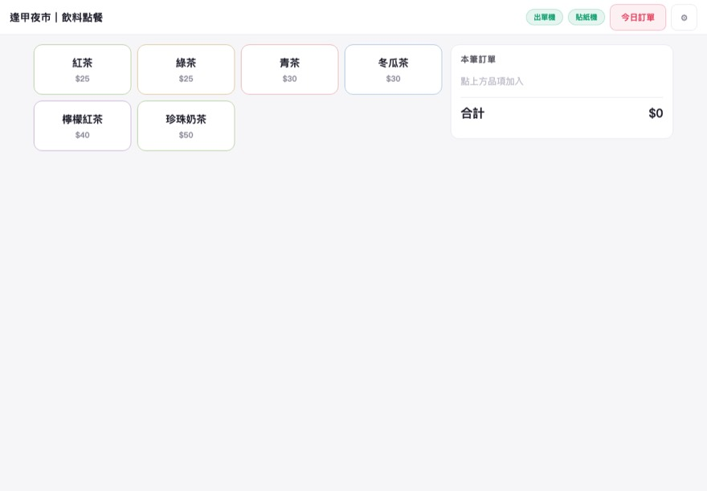
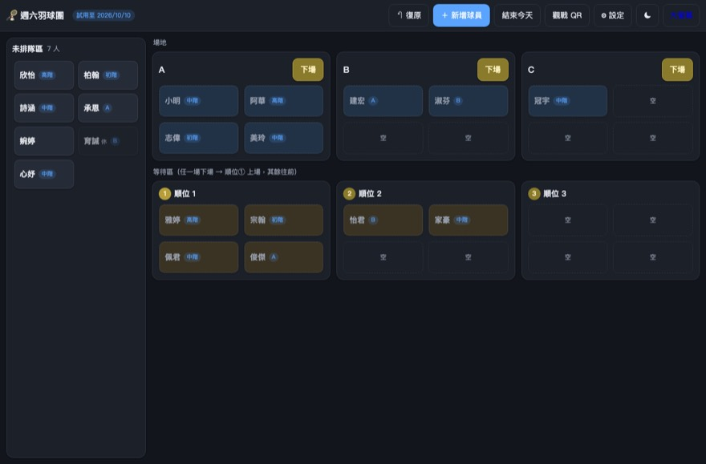
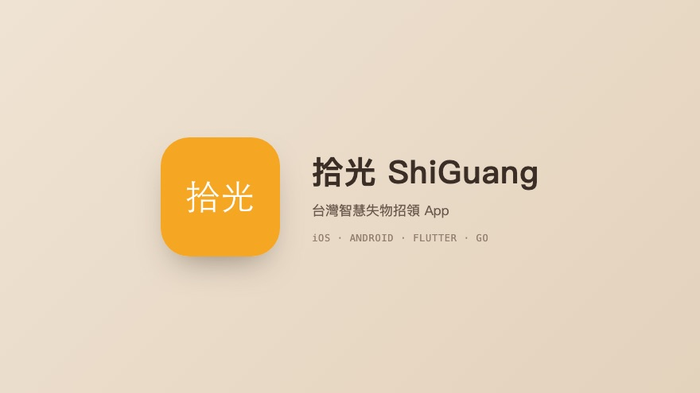
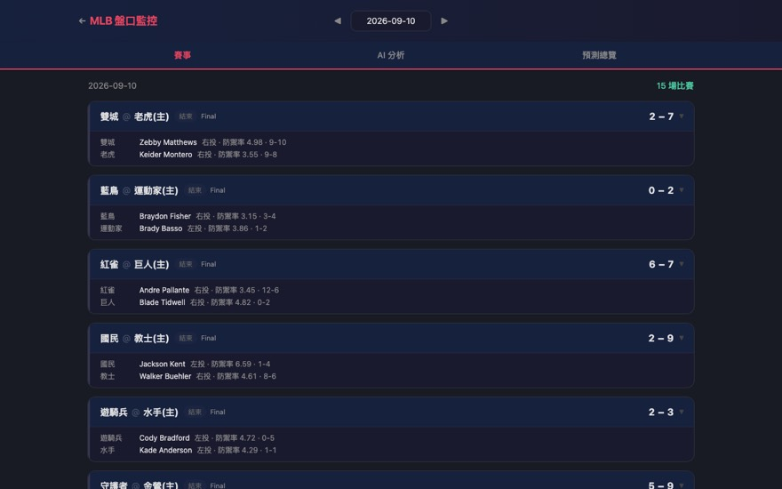
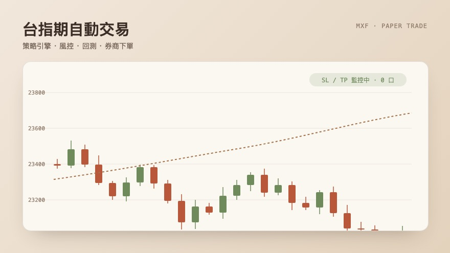
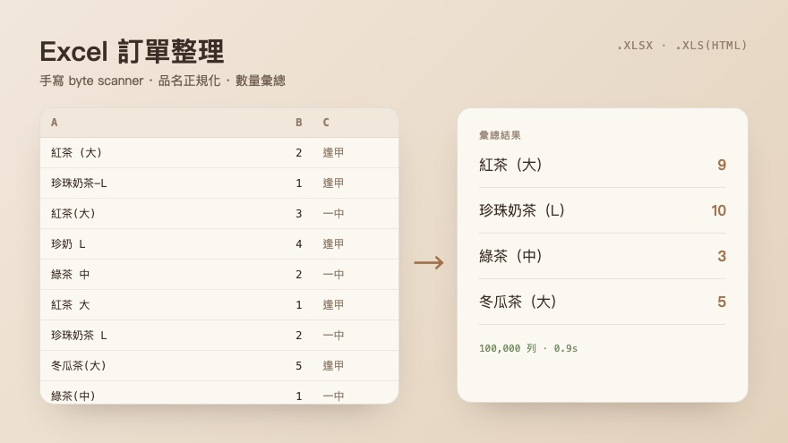
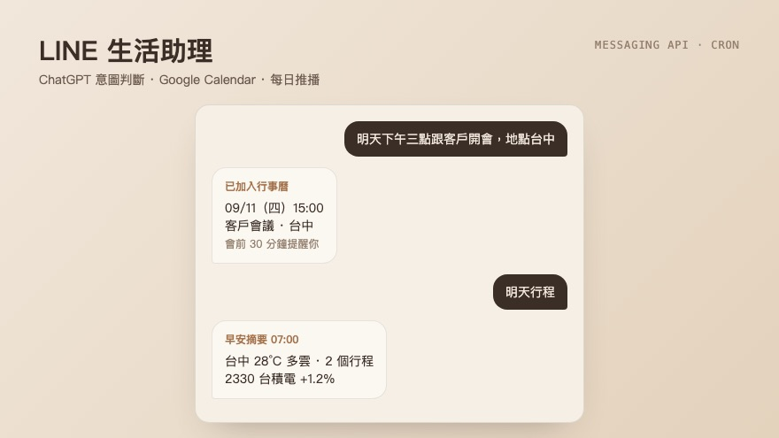
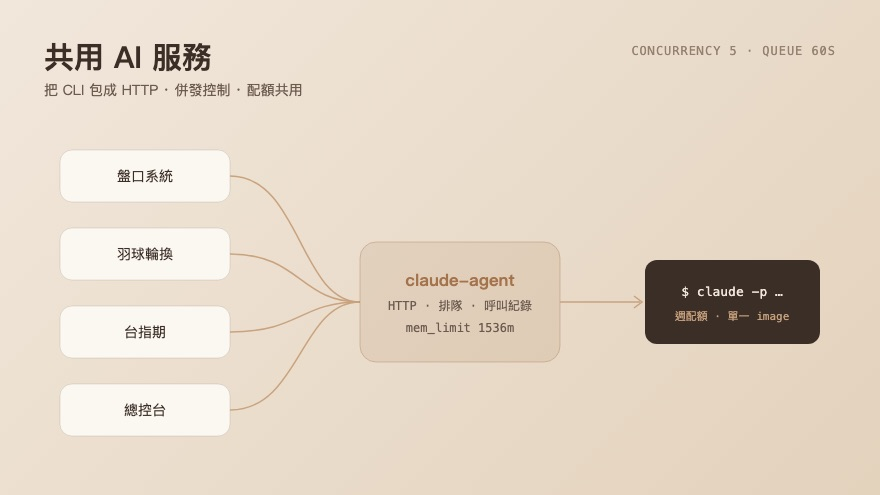
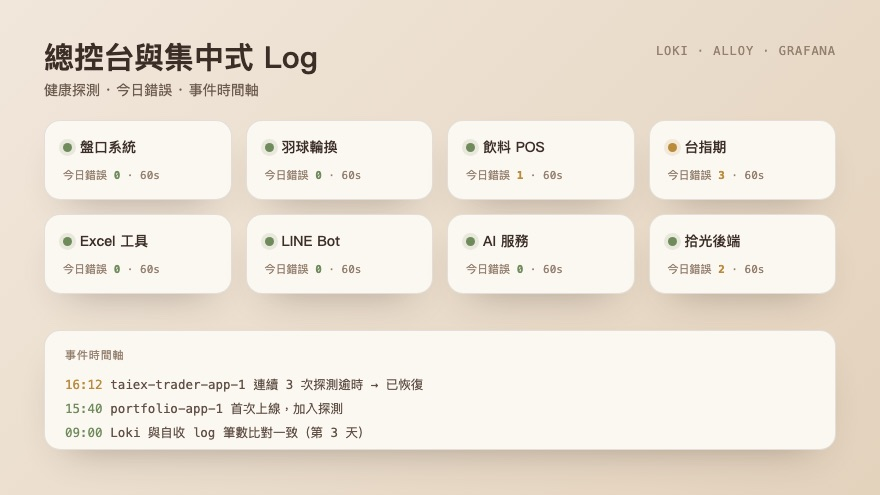

上線中POS · 硬體
夜市飲料餐車 POSiPad 點餐、樹莓派出單，3 家攤商使用中
提供夜市飲料攤販使用的離線優先點餐系統。樹莓派自己發 WiFi 熱點，iPad 開瀏覽器就能點餐，出單機與貼紙機直接出票；有網路時自動把訂單同步到雲端。
- Go 單一執行檔交叉編譯到 ARM，樹莓派零依賴部署；前端純 HTML/JS 內嵌進 binary
- 直接寫 USB printer class 驅動 80mm 出單機（ESC/POS）與芯燁貼紙機（TSPL），免 CUPS
- SQLite WAL 模式確保斷電不掉單；雲端報表依「地點 × 日期」檢視，支援多分店
- 線上更新菜單、即時看帳、OTA 更新；Tailscale 免公網 IP 遠端維運
- 雲端跑在 GCP VM 上的容器，只綁 loopback、設記憶體上限，經 nginx 與 Cloudflare 對外
角色：前端、後端、硬體串接、部署維運全包

上線中SaaS · 多租戶
羽球輪換系統iPad 拖曳排場，5 個球隊每週在用
給羽球團主用的輪換排場網頁：把球員拖到場地或等待順位，按「下場」整組自動補上。多裝置即時同步，一個 LINE bot 服務所有球隊的報名。
- 多租戶：每個球隊獨立帳密與月費制，試用 / 付費 / 停權由管理後台控制
- 拖曳用 Pointer Events 自己寫，另備「點一下選取、再點目標」給觸控失靈時用；復原 10 步
- SSE 讓多台裝置同步畫面；大螢幕投影頁與掃 QR 免登入觀戰頁
- 後台：登入失敗鎖定、IP 黑名單、異動紀錄、資料保留期自動清除
- Threads 自動排程發文推廣、貼文洞察、新回覆推 Telegram，token 自動續期
角色：產品設計、前後端、後台、上線與營運

運行中App · AI
拾光 ShiGuang台灣智慧失物招領 App
整合民間與官方資源的失物招領 App，用 AI 圖像辨識與特徵比對，自動媒合遺失物與拾獲物。iOS / Android 雙平台，含管理後台。
- 後端 Handler → Service → Repository 分層；OTP / Google / Apple 登入、JWT、限流
- Python AI 微服務做圖像特徵向量，pgvector 相似度比對、PostGIS 地理範圍查詢
- MinIO 物件儲存、Redis、Firebase 推播；Docker Compose 部署到 GCP VM
- 走過 App Store / Google Play 上架與審查流程（測試帳號、封閉測試、簽章指紋）
角色：後端、Flutter App、管理後台、上架流程

上線中Dashboard · LINE
多聯盟盤口與賽事系統NBA / MLB / KBO，盤口異動推播與 AI 分析
定時掃描各聯盟盤口，異動時推播 LINE；Web Dashboard 提供賽程、比分、逐局、投注紀錄，並用 AI 做賽前分析、賽後復盤與週報。
- 從單一 NBA 擴充到三個聯盟，各自的資料源、市場類型（獨贏 / 讓分 / 前五局）統一在同一套資料模型
- 排程掃描外部 API，Redis 去重避免重複推播；台灣時區與美國賽日的日期偏移處理
- AI 分析走自建的共用 AI 服務，容器內不裝 CLI，記憶體上限壓在 256MB
- React 前端與另一個交易系統共用自建元件庫，本機建置後上傳，VM 不跑 node
角色：後端、前端、排程、部署

模擬運行中交易 · 即時
台指期自動交易系統策略引擎、風控、回測與券商下單
小台（MXF）自動交易：Go 負責策略引擎、風控與 LINE 通知，Python 負責回測與券商 API 下單，React 前端用 WebSocket 看即時報價與部位。
- 日盤 / 夜盤時段排程、停損停利與出場路徑是回歸測試的重點，改策略必驗
- 下單拆成獨立 Python 微服務隔離券商 SDK，主服務不因 SDK 連線時序問題掛掉
- backtesting.py 回測模組驗證策略；週報依「週日到週六」自動彙整
- 目前以模擬模式在 VM 上運行，不送實單
角色：架構、策略引擎、前後端、部署

上線中工具 · 效能
Excel 訂單整理工具手寫解析器，十萬列檔案秒級處理
上傳訂單 Excel，自動做品名正規化與數量彙總後輸出分頁。為了大檔效能，xlsx 與偽裝成 .xls 的 HTML 都是自己寫 byte scanner 解析。
- 手寫 zip + XML byte scanner 取代標準 encoding/xml，並保留舊實作當基準做逐格等價測試
- 品名正規化有規則路徑與 AI 路徑可選；新 bug 一律先寫測試重現再修
- 改動解析邏輯必做「改前 / 改後」逐格比對，避免單元測試綠但輸出變了
角色：後端、解析器、效能基準

上線中Bot · 排程
LINE 生活助理 BotChatGPT 意圖判斷、行事曆、每日推播
用自然語言新增或查詢 Google Calendar 行程，早上推天氣、行程、股票摘要，行程前 30 分鐘提醒；關鍵字先攔截再交給 ChatGPT 判斷意圖。
- Webhook 驗簽 → 事件分流 → 關鍵字攔截 → ChatGPT 意圖分類（新增 / 查詢 / 閒聊）
- cron 排程：每分鐘掃行程提醒，Redis 防重複推送；每週日推下週摘要
- Flex Message 卡片統一 builder；Google OAuth 授權流程
角色：後端、排程、部署

上線中內部服務 · AI
共用 AI 服務把 CLI 包成 HTTP，各專案共用同一份配額
多個專案都要用 AI，但配額只有一份。做一個內部服務把 Claude CLI 包成 HTTP API，管併發、排隊、記錄每次呼叫與用量，各專案透過共用網路呼叫。
- 併發上限與記憶體上限綁在一起算：單次峰值 × 併發數要留在容器 mem_limit 內
- 滿載時新請求先排隊 60 秒再回 429，呼叫端的 timeout 必須把這段含進去
- 後台可看配額剩餘與完整呼叫紀錄；跨 compose 專案走共用 external network
角色：設計、後端、後台、容量規劃

上線中監控 · Log
總控台與集中式 Log一頁看完所有服務的健康狀態與今日錯誤
十幾個服務跑在同一台 VM，需要一眼看出誰出事。Loki + Alloy + Grafana 集中收 log，再做一個總控台探測各服務健康、列出今日錯誤與事件時間軸。
- 探測一律打容器內部位址，連續失敗達門檻才算異常，避免單次逾時造成假警報
- Loki 查詢加 5 分鐘快取；level 標籤大小寫混雜要不分大小寫比對
- 自己收 log 的 collector 唯讀掛 docker.sock，收哪些容器寫死在程式裡，不接受外部輸入
- 與 Loki 並行收集比對筆數一週，一致才切換，切換過程不能有 log 空窗
角色：監控架構、後端、維運